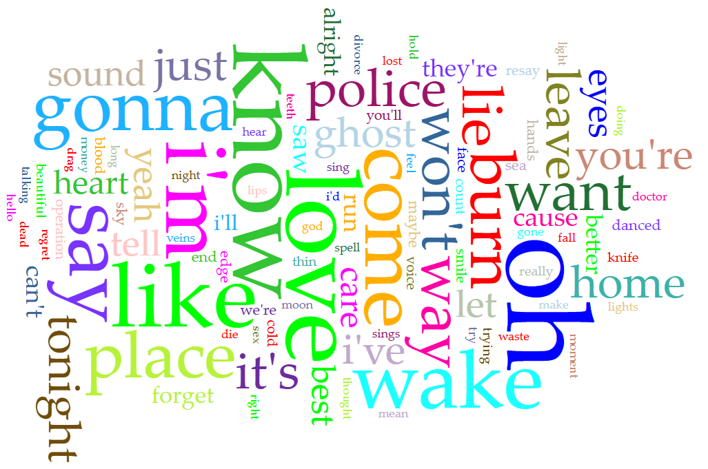
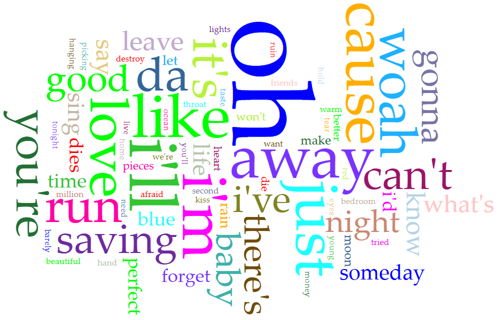
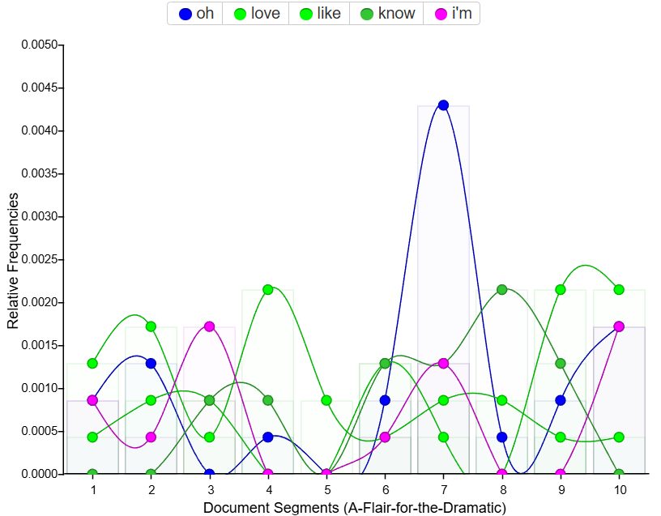
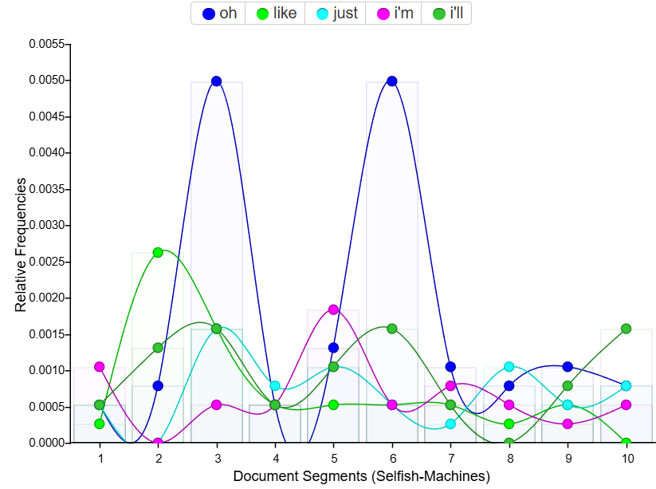

To begin my analysis, I used Voyant Tools to generate text clouds for both A Flair for the Dramatic and Selfish Machines. Text clouds provide a visual representation of the words that appear most frequently within a collection of text. The larger a word appears in the cloud, the more often it is used throughout the album's lyrics.


After examining both text clouds, several interesting patterns became apparent. While some frequently occurring words appear across both albums, the overall vocabulary of each album feels somewhat different. In the A Flair for the Dramatic text cloud, larger words such as "love," "know," "death," and "pain" stand out prominently. Many of these words seem connected to themes involving relationships, emotional conflict, and personal struggles.
The text cloud for Selfish Machines also contains recurring emotional language, but its most prominent terms differ slightly. Words such as "oh," "away," "like," and "want" appear more frequently, suggesting a different distribution of vocabulary throughout the album. Although both albums share similar subject matter, the text clouds indicate that they may emphasize different ideas or express them using different language choices.
One observation I found amusing is that filler words and vocalized expressions such as "oh" and "da" appear so frequently in the data. While these words carry little meaning on their own, they contribute significantly to the overall frequency counts because they are often repeated throughout songs.
In addition to text clouds, Voyant Tools generated frequency graphs that track where the most common words appear throughout each album. These graphs divide each album into segments and show how often individual words occur within different portions of the text. This makes it possible to examine not only which words are common, but also how their usage changes across the album as a whole.


The graph for A Flair for the Dramatic shows that several of the album's most common words fluctuate throughout different sections of the lyrics. Rather than being evenly distributed, many terms appear heavily in certain portions of the album before becoming less common elsewhere. This suggests that specific songs may contribute more heavily to the overall frequency of particular words.
A similar pattern can be seen in Selfish Machines. The most frequent words are not spread evenly across every song, and some terms appear in noticeable clusters. This uneven distribution highlights how different songs emphasize different ideas, topics, or lyrical styles, even when they belong to the same album.
One detail that stood out to me is the prominence of the word "oh" across both albums. In each graph, it is one of the most frequently used words overall. However, the graph for Selfish Machines shows two particularly large spikes in usage, indicating that the word appears much more heavily in certain portions of the album than in others. These peaks likely correspond to specific songs where the expression is repeated frequently, causing noticeable increases in relative frequency.
The frequency graphs add an additional layer of insight beyond the text clouds. While the text clouds reveal which words are used most often, the graphs help visualize how those words are distributed throughout each album, providing a clearer picture of the lyrical patterns present in the data.